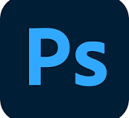
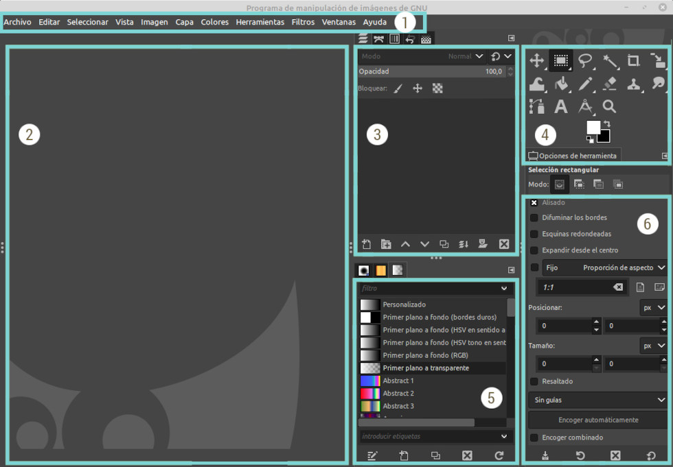
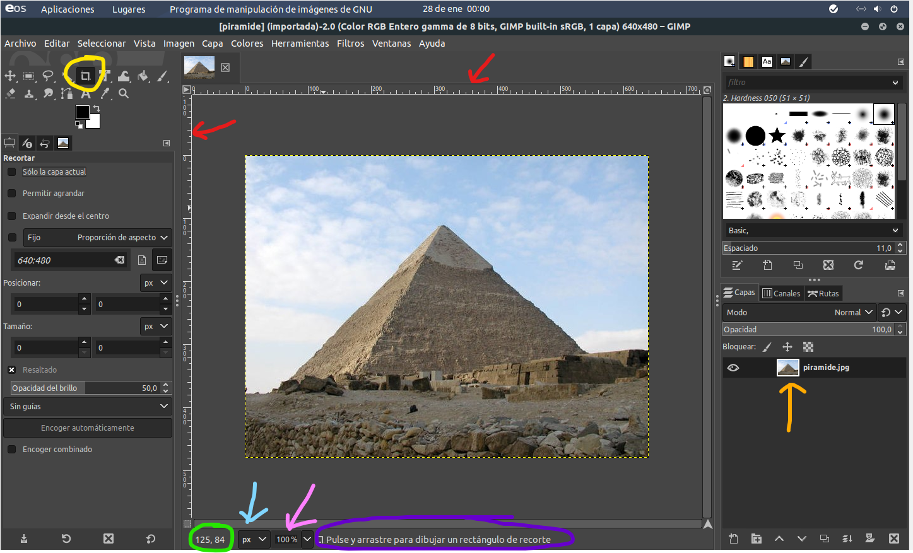

Edición de imágenes¶
Edición de imágenes¶
- ¿Qué es diseño multimedia?
- ¿Para qué sirven?
Presentar la información de forma clara y visual mediante el uso de imágenes, crear collages o adaptar gráficos ayuda a que nuestros trabajos sean más comprensibles y atractivos.
En este apartado aprenderemos a editar imágenes de mapa de bits con GIMP.
Imágenes digitales¶
Básicamente hay dos tipos de imágenes digitales, cada una de las cuales presenta características particulares, que la hacen adecuada para distintos fines:
- Están formadas por píxeles (puntos de color) que, en su conjunto, definen la imagen final.
- Cada uno de estos puntos tiene un color, un brillo, un contraste, etc. determinados.
- Cuantos más píxeles, mayor calidad y tamaño del archivo.
- Al ampliarlas, pierden calidad.
- Se usan en fotografías y la mayoría de imágenes de Internet.
- Ejemplos de formatos: JPG, PNG, GIF, BMP.

- Las imágenes están formadas por la composición de objetos matemáticos (líneas y formas).
- Cada uno de estos vectores tiene sus propias características (tamaño, tipo de línea, color, relleno...) especificadas en su definición.
- No pierden calidad al cambiar de tamaño.
- Ocupan menos espacio que las imágenes bitmap.
- Ideales para logotipos, iconos y dibujos.
- Formato más común: SVG.

Formatos de imágenes¶
Dentro de cada tipo de imagen hay una gran cantidad de formatos diferentes. El formato determina cómo se guarda la imagen, su calidad y su tamaño. Además, solo podrá ser abierto y manipulado por aquellas aplicaciones que estén diseñadas para trabajar con ese formato.
En la siguiente tabla se muestran los formatos de archivos de imagen de mapa de bits:
| Formato | Descripción | Compresión |
|---|---|---|
| BMP | Mapa de bits. Usado por Windows (Paint). | Sin pérdidas |
| GIF | Muy usado en la web, soporta animaciones, 256 colores. | Sin pérdidas |
| JPG / JPEG | Imagen digital, alta compresión, admite 16 millones de colores. | Con pérdidas ajustables |
| TIF / TIFF | Alta calidad, muy usado en fotografía. | Sin pérdidas |
| PNG | Sustituto de GIF, mejor calidad, menor tamaño. | Sin pérdidas |
| XCF | Formato propio de GIMP, soporta capas y transparencias. | Sin pérdidas |
| PSD | Formato de Photoshop, soporte completo de capas. | Sin pérdidas |
| WebP | Formato de Google, para la web y las aplicaciones móviles. | Sin pérdidas |
| SVG | Formato deb Inkscape. | Sin pérdidas |
| Formato de almacenamiento de archivos universal de tipo compuesto (imagen vectorial, mapa de bits y texto). | Sin pérdidas |
Calidad de una imagen¶
La calidad de una imagen digital depende del número de puntos que la componen y del número de colores que se emplean. Cuanto mayor sea el número de puntos y el de colores, más calidad tendrá la imagen.
A mayor calidad, mayor tamaño del archivo. La compresión reduce el tamaño, pero puede provocar pérdida de calidad (especialmente en JPG).

A continuación, se presenta una tabla con los programas de edición gráfica y visores más populares:
| Programa | Icono | Aplicación | Descripción | Software libre |
|---|---|---|---|---|
| GIMP | |
Edición de imágenes digitales | Muy potente, en continuo desarrollo. | Sí |
| PhotoScape | Edición y visor de imágenes | También visor de imágenes. | Gratuito | |
| Photoshop |  |
Edición de imágenes digitales | Muy potente y usado profesionalmente. | No |
| Paint Shop Pro | Edición de imágenes digitales | De la familia Corel. | No | |
| XnView | Visualización de imágenes | Organizador de fotos. | Sí | |
| Pixlr |  |
Edición de imágenes digitales online | Editor completo, tres variantes, sin registro. | No |
| PicMonkey |  |
Edición de imágenes digitales online | Intuitivo, mejora imágenes, collages y marcos, sin registro. | No |
Tratamiento de imágenes con GIMP¶
GIMP es un programa gratuito que permite procesar dibujos vectoriales y fotografías digitales. Su nombre viene de GNU Image Manipulation Program (Programa de manipulación de imágenes de GNU).
Primeros pasos con Gimp¶
-
Abrir Gimp
Podemos abrir la aplicación desde el menú Aplicaciones > Gráficos > Editor de imágenes GIMP.
También podemos escribir la palabra "Gimp" en el botón de inicio de LLiurex y pulsar en el icono de la aplicación.
Después,Archivo > Abrir > abrir la ubicación y seleccionar el archivo. Como alternativa, podemos pulsar sobre el archivo con el botón derecho del ratón y seleccionar Abrir con > GIMP.
-
Ventana principal
Se abrirá la ventana de Gimp con el siguiente aspecto.

Partes de la ventana principal de Gimp Las partes principales de la ventana principal, son las siguientes:
- La barra de menú de imagen. Todas las funcionalidades posibles de GIMP se encuentran en esta barra de menús, incluyendo las de la Caja de herramientas, cualquier operación sobre una capa, el lienzo, filtros, configurar la interfaz (menú Ventanas), y mucho más.
- Ventana de imagen. Es sencillamente el área de trabajo. Donde estará el lienzo y todas las capas.
-
Diálogo empotrable Capas (activo). Es un panel de control para capas. Permite organizarlas, ordenarlas, ajustar el modo en que se superponen, su opacidad, … y mucho más. En el resto de pestañas: Rutas, Canales, Histórico de deshacer y editor de degradados.
Las capas son como distintas hojas que se van superponiendo unas encima de otras, en las que se puede dibujar o aplicar filtros y efectos; al visualizarlas todas a la vez, se obtiene la imagen final.
- Inicialmente, las imágenes tienen una sola capa, denominada Fondo, pero, según se vayan realizando determinadas acciones, irán apareciendo nuevas capas.
- Las acciones con capas se pueden realizar desde la ventana Capas. Así, para activar una y poder trabajar con su contenido, bastará con hacer clic sobre su nombre. Para cambiar el nombre de una capa, habrá que hacer doble clic sobre su nombre y escribir el nuevo
- La capa activa se muestra resaltada en azul y será visible si se ve un icono de un ojo , pinchando sobre este icono desaparece, y si se vuelve a pulsar se hará de nuevo visible.

Ejemplo del lienzo y las capas en GIMP - Caja de herramientas. El área de herramientas más importante de GIMP. Contiene la mayoría de herramientas que vamos a usar: mover, selección, recorte, escalar, rotar, voltear, rellenar, pinceles, clonado, texto, etc. etc.

Herramientas de selección de GIMP - Diálogo empotrable Degradados (activo). En el resto de pestañas: Pinceles y Patrones.

Pinceles y Patrones -
Diálogo empotrable Opciones de herramienta. Permite configurar la herramienta seleccionada. Las opciones de herramienta cambian de acuerdo a la herramienta que tenemos seleccionada en la Caja de Herramientas.
- Esta configuración inicial de GIMP puede simplificarse cerrando la ventana Capas, Canales, Rutas y Deshacer. Para recuperar la visualización de una ventana no principal selecciona Ventanas > Diálogos empotrables > ...
- Para restaurar estos paneles a la disposición inicial selecciona Editar > Preferencias > Gestión de la ventana y pulsar en el botón Restaurar las posiciones de ventana guardadas a los valores predeterminados. Clic en Aceptar y luego en Reiniciar. Si se cierra GIMP y se vuelve a abrir se mostrarán los paneles por defecto.
-
Abrir una imagen
Para ello descarga en el Escritorio la imagen que tienes en los apuntes o hayas encontrado en internet en formato
.jpg.Para abrirla nos vamos al menú Archivo > Abrir, localizamos la imagen y pulsamos en Abrir.

Ejemplo abrir imagen en gimp Elementos de interés:
- La imagen aparece con unas reglas horizontales y verticales (flecha roja) cuya escala está en píxeles (podemos cambiar a centímetros, milímetros o cualquier otra medida desde el selector indicado por la flecha celeste).
- Se ha activado por defecto la herramienta Recortar, como podemos ver en el círculo amarillo. Por lo que si ahora pinchamos y arrastramos con el ratón, estaríamos recortando la imagen.
- También podemos ver que se ha añadido una primera capa (indicada por la flecha naranja).
- Podemos acercarnos o alejarnos de la imagen usando el selector de porcentaje que indica la flecha rosa. En la zona rodeada de morado, tenemos información de cómo funciona la herramienta actualmente seleccionada.
- Por último los números que están rodeados de verde son las coordenadas del puntero del ratón. El primer número representa el desplazamiento sobre el eje horizontal, y el segundo número el desplazamiento sobre el eje vertical, teniendo en cuenta que se empieza a contar desde la esquina superior izquierda de la imagen (posición 0,0). Cuanto más avance el ratón desde ahí hacia la derecha, más grande será el primer número. Cuando más avance el ratón desde ahí hacia abajo, más grande será el segundo número.
-
Rehacer o deshacer una acción
Para deshacer una acción: Editar > Deshacer mientras que para rehacer una acción anteriormente deshecha: Editar > Rehacer
-
Escalar una imagen
Escalar una imagen consiste en aumentar o reducir su tamaño físico. Para ello se cambia el número de píxeles que contiene y se redimensiona el lienzo del dibujo.
-
Guardar la composición GIMP
Para guardar la composición con la que estamos trabajando en Gimp debemos ir a Archivo > Guardar > elegir nombre y la ubicación en el equipo local
Este archivo con extensión
.xcfsolo puede ser abierto en equipos que tengan GIMP instalado. -
Exportar a un formato de imagen convencional
Para guardar una imagen, en un formato convencional de imagen (JPG, PNG, …) con GIMP, debemos utilizar la opción de menú Exportar, que realiza una acción completamente diferente de la opción de menú Guardar
Actividad
📝 AA5.1 Escalar una imagen, modificarla y exportarla¶
(C.ESP2 / CE2.3 / IC1-3p)
-
Abre la imagen p01 en Gimp.
- Abre GIMP.
- Ve a Archivo > Abrir.
- Busca y selecciona la imagen p01.jpg.
- Pulsa Abrir.
-
Con la herramienta de texto añade tu nombre y apellido a la imagen.
- Selecciona la Herramienta de texto (icono de la A).
- Haz clic sobre la imagen donde quieras escribir.
- Escribe tu nombre y apellido.
- En las Opciones de herramienta:
- Cambia el tipo de letra.
- Ajusta el tamaño.
- Elige el color del texto.
👉 El texto se crea en una capa nueva, lo que permite moverlo o modificarlo sin afectar a la imagen.
-
Escala la imagen al 45%
- Ve al menú Imagen > Escalar la imagen.
- En el menú desplegable a la derecha de Anchura y Altura, selecciona Porcentaje.
- Escribe 45 % en el campo Anchura.
- Comprueba que el valor de Altura se ajusta automáticamente.
- Pulsa Escalar.

Escalar imagen -
Exporta la imagen formato pdf.
- Ve a Archivo > Exportar como.
- Escribe el nombre del archivo y añade la extensión .pdf.
- Elige la carpeta donde guardar el archivo.
- Pulsa Exportar.
- Acepta las opciones por defecto y confirma.
{kind=link}
Referencias¶
- Guía Gimp 2.10